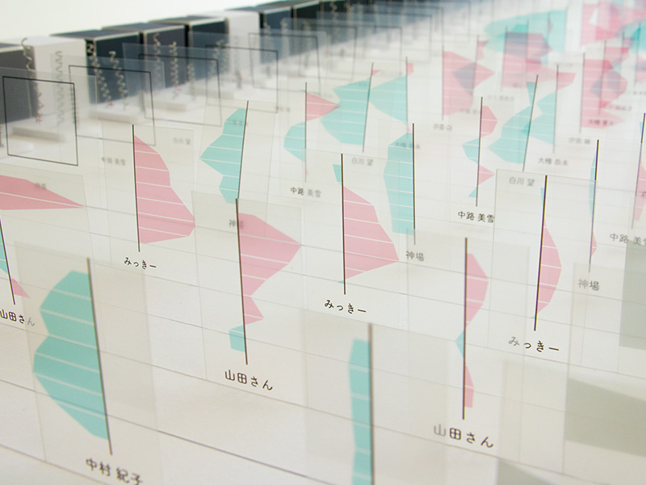
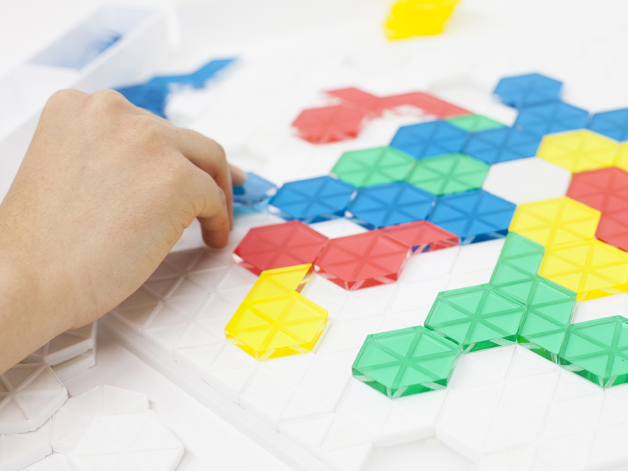
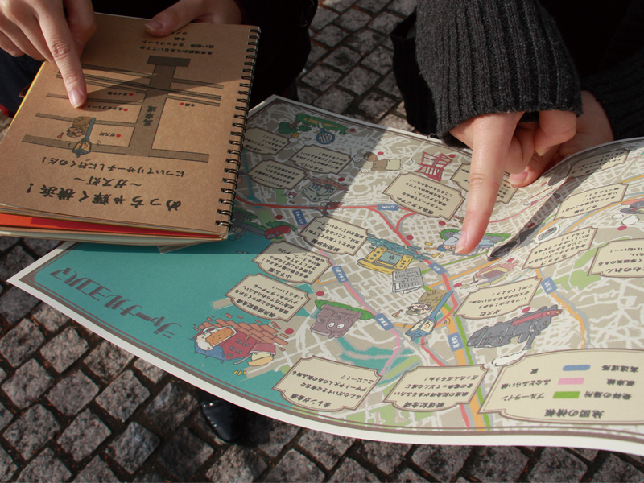
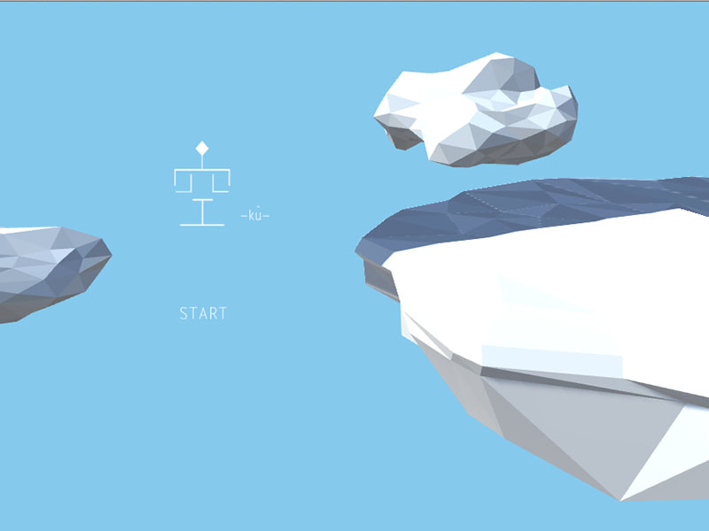

2年 3D表現演習
授業内容の説明がここに入ります

- 
- 
- 
つまむかたち×たのしい楽器
高屋 知織人の指の形にフィットするつまみの形を検証し、そのつまみのデザインを起点にした、既存の楽器(シェイカーとカスタネット)の新しいかたちを提案します。小さなこどもが扱うことを想定し、おもちゃのような色使いと丸みのある形に仕上げました。
先生からのコメント
先生からのコメントが入ります先生からのコメントが入ります先生からのコメントが入ります先生からのコメントが入ります先生からのコメントが入ります先生からのコメントが入ります
BASE PLANT
山﨑 健悟人の指の形にフィットするつまみの形を検証し、そのつまみのデザインを起点にした、既存の楽器(シェイカーとカスタネット)の新しいかたちを提案します。小さなこどもが扱うことを想定し、おもちゃのような色使いと丸みのある形に仕上げました。
先生からのコメント
先生からのコメントが入ります先生からのコメントが入ります先生からのコメントが入ります先生からのコメントが入ります先生からのコメントが入ります先生からのコメントが入ります